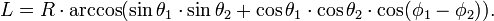

Вообще говоря, так делать нельзя. Сфера не проецируется на плоскость с сохранением расстояний (через простые формулы)
В первом приближении формула вот такая:

Здесь θ1 и θ2 - широты точек, а ϕ1 и ϕ2 - долготы точек. Все координаты в радианах.
R - радиус земли, в расчетах берут 6 370 000 метров. Хотя на самом деле Земля по форме близка к эллипсоиду вращения с экваториальным радиусом 6 378 км и полярным 6 356 км.